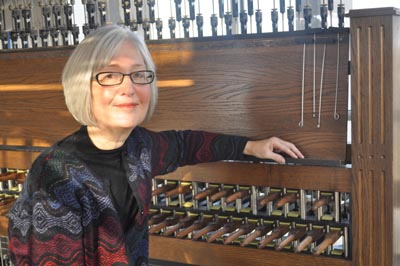

Sue Bergren
July 29, 2012

Sue Bergren is an Assistant Carillonneur at the Millennium Carillon in Naperville, Illinois. She studied carillon with Wylie Crawford and Karel Keldermans, and became a Carillonneur member of the Guild of Carillonneurs in North America (GCNA) in 2004. She currently serves the guild as co-editor for Carillon News the GCNA's newsletter, was recently elected to the organization's Board of Directors, and is music editor and owner of American Carillon Music Editions (ACME), a publishing company of carillon music. She has a Master's degree in Organ Performance from Northern Illinois University and is on staff at Our Saviour's Lutheran Church in Naperville. She is active as a carillon recitalist, plays regularly on the Naperville Millennium Carillon and gives weekly recitals on the Rockefeller Memorial Carillon.